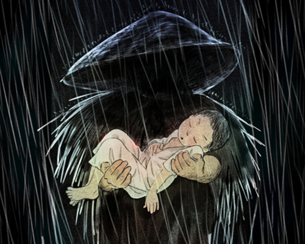
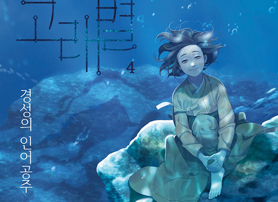
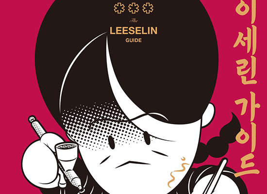
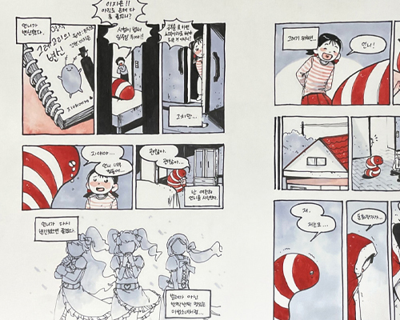
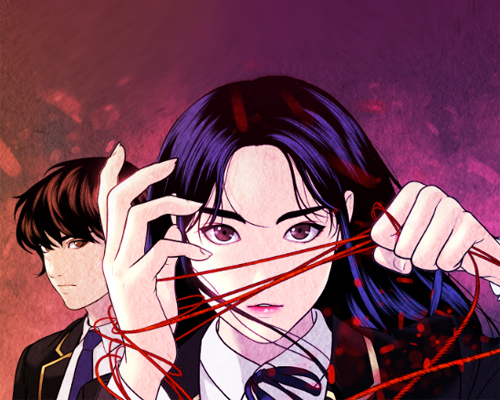
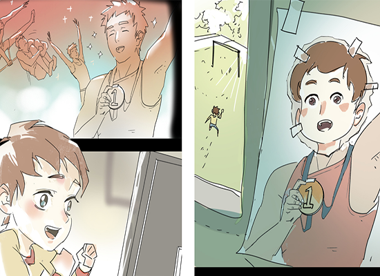

사업소개
BUSINESS
우수만화 컨텐츠 발굴
대한민국 창작만화 공모전
- “명성과 역사를 모두 갖춘 명예로운 공모전”
-

-
명실상부 대한민국에서 가장 유서 깊은 만화공모전입니다. 대중성과
예술성을 갖춘 우수한 만화 콘텐츠 발굴을 위해 2003년부터
개최됐습니다. 만18세 이상의 대한민국 국민이라면 누구나 참여
가능하며 대상 수상자에게는 문화체육관광부장관상을 수여합니다.
단편만화 부문, 카툰 부문으로 나뉘어 진행됩니다.
-
2021 대한민국 창작만화 공모전 대상 보기
네이버웹툰 최강자전
- “명실상부 최고의 신인 웹툰작가 등용문”
-
-
‘한국만화영상진흥원과 함께하는 네이버웹툰최강자전’은 한국 웹툰의
발전과 함께한 대표적인 신인 웹툰작가 등용문입니다. 연재 경력이
없는 신인 웹툰작가 대상으로 진행되며, 본선은 랭킹전 형식으로 100%
독자투표에 의해서 수상자를 선정하는 참여형 공모전입니다.
-
2021 대한민국 네이버웹툰 최강자전 대상 보기
오늘의 우리만화상
- “시대를 투영하는 창, 만화!”
-

-
만화는 가장 다채로운 시선으로 시대를 투영해내는 콘텐츠인데요,
문화체육관광부와 한국만화영상진흥원은 1999년부터 한 해를 대표하는
만화 다섯 작품을 ‘오늘의 우리만화’로 선정해 수상합니다.
-
2020 오늘의 우리만화상 대상 보기
만화평론공모전
-
“지금, 만화·웹툰 문화에
새로운 활력을 불어넣어 줄 평론가를 찾습니다!”
-

-
만화평론공모전은 신인/기성 부문으로 나뉘어 진행되며 입상자는
상금과 함께 만화 비평 전문지인 <지금, 만화>에 필자로 참여할
수 있는 기회를 얻습니다. 만화·웹툰 평론 문화의 활성화를 통해
만화를 대하는 우리의 시선이 더욱 다채로워 진다면 이것은 분명 우리
만화 문화의 발전에 두터운 자양분이 될 것입니다.
-
2021 만화평론공모전 신인상 보기
전국학생만화공모전
- “한국 만화의 미래를 엿볼 수 있는 공모전”
-

-
미래 한국 만화계를 이끌어 나갈 만화 꿈나무들을 발굴하고 육성해내기
위한 공모전입니다. 고등부와 중등부로 나뉘어 진행되고 카툰,
이야기만화, 캐릭터 3개 부문에 응시할 수 있습니다. 전체 부문
대상에게 문화체육관광부장관상을 수여하고, 고등부의 경우 실기대회를
개최해 수상자에게 대학 입시 특전까지 주어집니다.
-
2021 전국학생만화공모전 대상 보기
부천만화대상
- “대한민국 최고 권위의 만화상”
-

-
부천만화대상은 만화가의 창작 의욕을 고취하고 만화 산업을
발전시키기 위해 2004년부터 매년 진행되는 국내 최고 권위의
만화상입니다. 대상 수상 작가는 상금과 함께 부천국제만화축제의
포스터 제작에 참여하고 특별 전시를 개최하게 됩니다.
-
2022 부천만화대상 대상 보기
한중일 신인만화가 콘테스트
- “Who is the next Asia comics star?!”
-

-
한중일 신인만화가 콘테스트에는 한/중/일 각국을 대표하는 신인만화가
21인이 4컷 만화 빈칸채우기, 특정 주제의 단편만화 제작하기 등
다양한 프로그램으로 경쟁하며, 또 한편으로는 우정과 화합을
도모합니다. 한국의 한국만화영상진흥원, 일본의 기타큐슈만화박물관,
중국의 써머주 만화 에이전시가 공동 주관하는 본 콘테스트는 매해
각국을 순회하며 개최됩니다.
-
2021 한중일 신인만화가 콘테스트 금상 보기